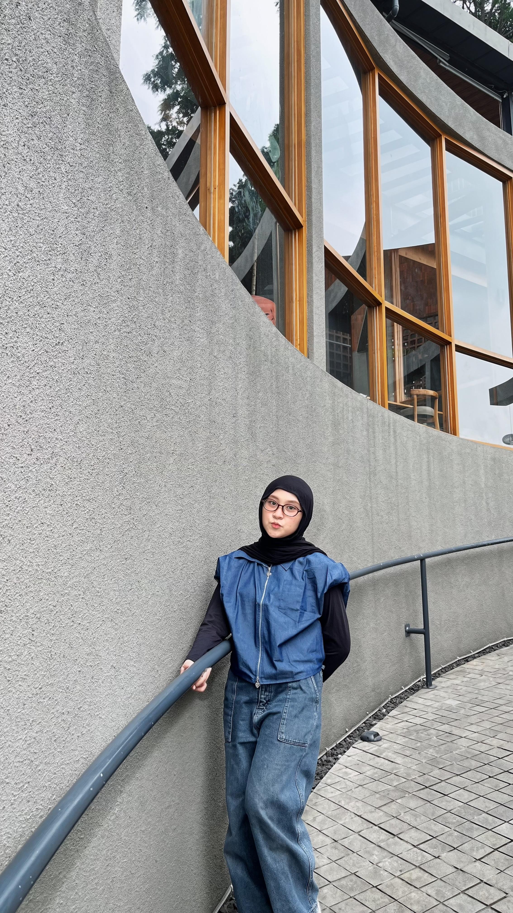

Discount Calculator
A Python program that calculates the final price after a discount, with input validation and Rupiah formatting.
Python
Telecommunication Systems graduate | ICT Solutions | Aspiring IT Teacher
See My ProjectsI hold a Bachelor of Telecommunication Systems from Universitas Pendidikan Indonesia (GPA 3.69). I currently work as a Sales Engineer in ICT solutions, and I have taught ICT (TIK) for grades X, XI, and XII. I enjoy explaining technology in a practical, hands-on way.
A Python program that calculates the final price after a discount, with input validation and Rupiah formatting.
PythonAnalyzed how content complexity and resolution affect MPEG-TS delay, packet loss, and throughput using TSDuck and Wireshark.
TSDuck WiresharkRedesigned worksheet-based ICT lessons into practical sessions with direct practice and Q&A for grades X to XII.
TeachingA cat-themed cafe website with Home, About Us, Menu, Adopt Cat, and Contact pages, integrated with a database using Visual Studio Code and phpMyAdmin.
Web phpMyAdminCo-authored an article comparing Floodlight and ONOS controllers on a Spine Leaf topology using Mininet on Linux. Floodlight showed better delay and throughput, while ONOS showed higher network reliability.
SDN MininetRan mobility tests with G-Net Track Lite and stationary tests (download, upload, latency, call and SMS) with Speedtest Master Pro to measure signal quality.
NetworkLet's connect: faadhilah17andini@gmail.com